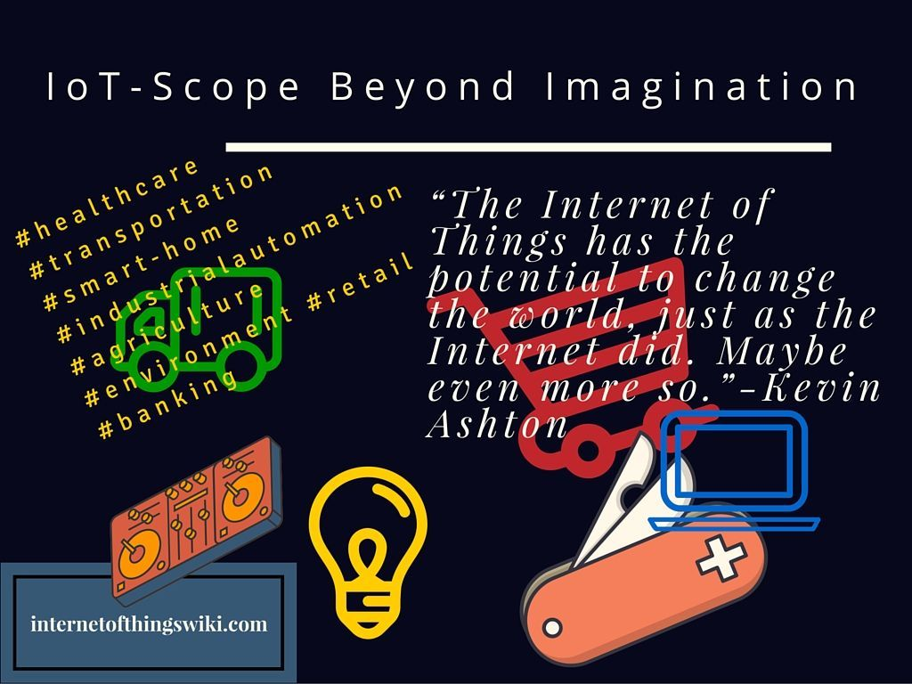
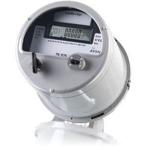

Trends In IoT In 2016
By Rahul -January 30, 2016
World around us is getting interlinked very fast, all thanks to new hype about the Internet of Things. From smart wearables to smart homes to connected devices, 2015 has witnessed an unprecedented surge in the number of connected IoT devices. The same trend is going to continue in the year 2016. What new innovations and Internet Of Things trends in 2016 you can witness, let’s check out.
From Public to Enterprise IoT
Definitely year 2015 was the most productive in spreading awareness about Internet Of Things definition and its applications. People came to know about IoT applications and scope of interlinking everything possible.
Internet Of Things trends in 2016 will be all about making the theory go practical with enterprises leading towards reinventing the conventional industries. IoT technology can have many advantages for industries like mining, oiling, manufacturing and research facilities.
IN SHORT FROM THE PERSPECTIVE OF IMPLEMENTATION OF IOT TECHNOLOGY 2016 WILL BE MOST IMPORTANT YEAR.
Expert’s Speak
Experts predict that there will be a greater emphasis on the practical implementation. According to Dell’s IoT strategy and partnerships Director, Jason Shepherd, the IoT applications reached the hype on the consumer markets already to its peak in 2015 and the coming year is going to be focused around IoT companies and enterprises.
According to him the surge in the consumer IoT platform and devices like fitness trackers is showing the potential of internet of things applications.
“AS COMPANIES BEGIN UNDERSTANDING THE VALUE OF IOT (RETURN ON INVESTMENTS, EFFICIENCY, PRODUCTIVITY, ETC.), COMMERCIAL IOT SOLUTIONS WILL GAIN TRACTION AND THE ENTERPRISE WILL EMERGE AS THE LARGEST MARKET FOR IOT ADOPTION.”- JASON SHEPHERD, DELL
IoT Big Data Analytics Will Be Profitable
Internet of Things big data is already a big thing and will take center stage as it the number of connected IoT devices increases. IoT big data analytics is going to be a challenge for engineers and data scientists to manage. With billions of interlinked devices producing zillion bytes of data, challenge will be to utilize and mange such amounts of data.
THE MONETIZATION OF HUGE VOLUME OF IOT DATA WILL BECOME A BIG BUSINESS OPPORTUNITY IN 2016.
IoT infrastructure needs to be upgraded with the required bandwidth and power specifications. Data generation is not the only problem but storing and communication are also a challenge.
According to Don, CEO of Infobright –In the new brave world of IoT analytics companies will struggle to handle the unpredictable data reality. The problem these companies will be facing is not only storing and handling vast volume of data but also converting it into information.
According to him internet of things enterprises will face 4 major challenges in respect of data handling. These are:
- Providing pre-planned and ad hoc big data analytics
- Providing a predictive as well as investigative type of IoT analytics environment
- Scaling proportionally to the increase in number of users and data complexities
- Ability to handle hybrid and heterogeneous data landscape
IoT Security Will Be paramount
Security risk of interlinked IoT devices has already being discussed a lot in 2015. Experts show concern towards the increasing IoT security breaches and threats. Data security will again be a challenge for enterprises to tackle in 2016.
APPROACH WILL NOT BE QUICK-TO-MARKET IN 2016 FOR IOT APPLICATIONS BUT SECURITY FIRST.
We can see development of security models that will push the encryption and internet security models existing right now to their limits. This will be unlike the consumer IoT domain where the focus of business is to Quick-to-Market, security is often bailed on. With enterprises security it is necessary to ensure that consumers get the information they need but at the same time level of security will be paramount.
Wearable Tech Will Be Dominant
Irrespective of what people has to say about the internet of things applications still wearable tech will dominate consumer markets in 2016 as well. In industrial use as well the wearables will be important. IoT devices like smart gloves, HUD or Heads Up Displays and smart cameras are going to revolutionize many manufacturing and automation industry processes.
Finally the “Internet of Everything”
In 2016 you can finally start experiencing what exactly is the meaning of internet of everything in true sense.
We can see the IoT tech affecting many parts of our lives from transportation to healthcare to personal lifestyle. Scope is huge for internet of things in any and every sector. Internet Of Things trends in 2016 will be focused around implementation in analytics, robotics, automation, manufacturing and Artificial Intelligence will continue.